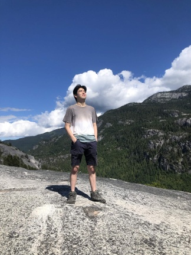
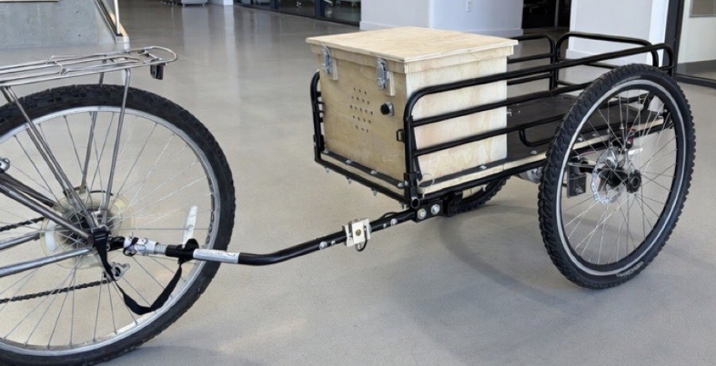
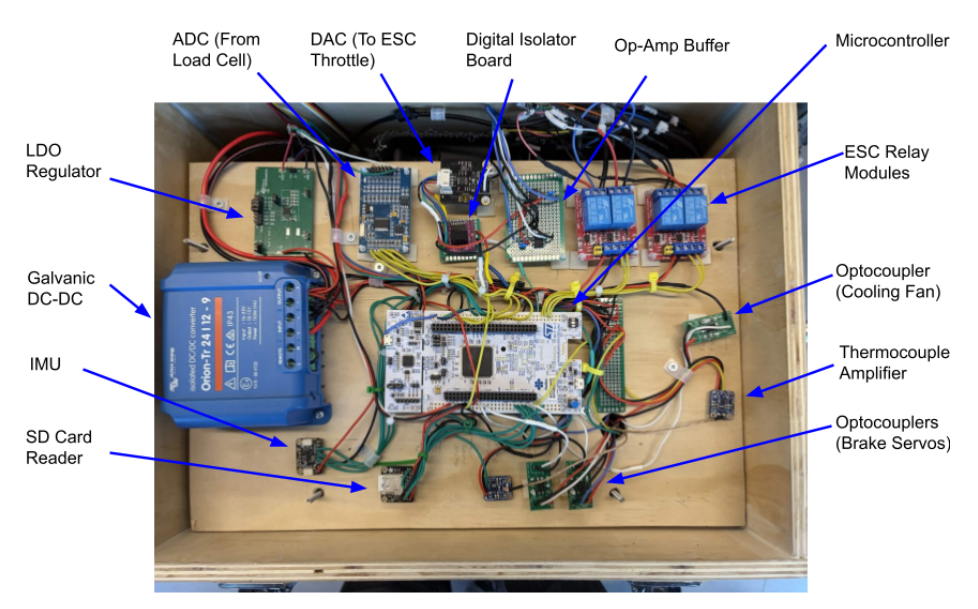
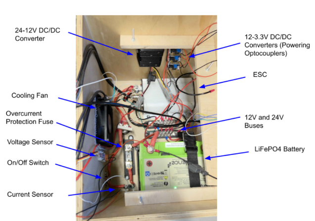

BASc In Sustainable Energy Engineering

I am a recent graduate from SFU's Sustainable Energy Engineering program. I have
multidisciplinary experience in firmware, electrical, and mechanical engineering.
I am particularly interested in energy generation technologies, automation, and
embedded systems. As an engineer, I strive to build my skills and knowledge through
real-world experience, nurture my curiosity, and continue to challenge
myself in my work.
Some hobbies of mine include playing the saxophone, hiking, and cycling. I'm happiest when
I'm outside enjoying nature. Any time spent outdoors feels like time well spent.
I also have a keen interest in art, music, and anything that requires a creative process.
Sept 2024 – Apr 2025
Sept 2023 – Dec 2023



To reduce the reliance on internal combustion engine (ICE) motor vehicles for towing purposes, a motorized bicycle trailer design was proposed. It incorporates an electric propulsion, braking, and a central control system to account for its own weight, providing towing capability while imparting minimal force onto the rider.